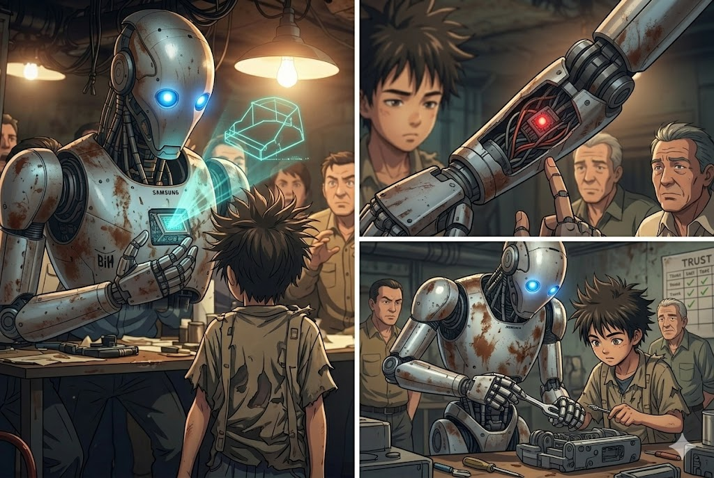

BIO comienza diciendo su plan para derrotar a la IA maligna de una vez por todas. Los sobrevivientes no muy convencidos de que sea BIO quien de su plan lo escuchan atentamenete
BIO:
Mi plan es llamar la atencion de skiller con mi presencia y con eso atraerla a una trampa donde podremos atacar con todas nuestras armas y asi destruirla
En caso de que sea necesario me enfrentare a skiller para darles tiempo y me autodestruire con ella
Los sobrevivientes al ver la sinceridad de BIO lo deciden tomar ne cuenta paa la mision pero necesitara unos dias para poder ganarse la confianza de todos en el asentamiento asi BIO es puesto aprueba para ganar la confianza de todos.